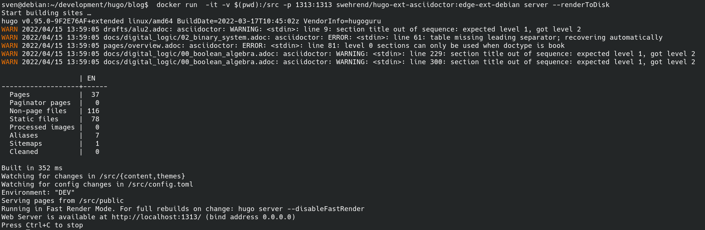

Since one week my blog is build on the static-site-generator Hugo. I wanted to move to Hugo far earlier, due to the wide variety of themes. However this required the move from Asciidoc to Asciidoctor, and I experienced a few problems with the integration of Asciidoctor into my existing workflow. As the approach of rendering the latex-equations in the asciidoc-documents no longer worked, I decided to move on to client-based rendering of formulas, like done in KaTex and Mathjax.
So to install Hugo, Asciidoctor and its dependencies without headaches, we again make use of Docker and its huge ecosystem: Somebody already created Docker images for hugo with asciidoctor integrated, so we do not need to go through the sometimes cumbersome setup of Asciidoctor and its dependencies.
With docker installed, in the shell (for Linux and Mac OS, for Windows the powershell) we do a
docker pull klakegg/hugo:edge-asciidoctorwhich pulls an image with the latest Hugo version and Asciidoctor integrated from the Docker-repo klakegg.
We navigate to the parent-directory of our blog, and run the following command:
docker run -it -v $(pwd):/src klakegg/hugo:edge-asciidoctor new site hugo/blogThis creates the skeleton of our new site, looking like that:
old-blog
hugo
└── blog
├── archetypes
├── config.toml
├── content
├── data
├── layouts
├── static
└── themesWe have no theme installed yet, so go to themes and select your favorite, mine is Book. We install it via simple download or via git:
cd hugo/themes
git clone https://github.com/alex-shpak/hugo-bookand add the line:
theme = "hugo-book"to our config.toml. While we are at it we also add the following policy, necessary since hugo version 0.91, to our config.
Example config.toml block
[security]
enableInlineShortcodes = false
[security.exec]
allow = ['^dart-sass-embedded$', '^go$', '^npx$', '^postcss$', '^asciidoctor$']
osEnv = ['(?i)^(PATH|PATHEXT|APPDATA|TMP|TEMP|TERM)$']Now we need to move the content from the old blog to new, we do something similar to this:
cp ../old_blog/pages ../hugo/content/docs
cp ../old_blog/posts ../hugo/content/posts
cp ../old_blog/images ../hugo/content/docs/imagesNow we need to convert the adoc-headers to the hugo frontmatter format, and also adapt the asciidoc syntax to the new.
To make our new blog digesting the equations and formulas written in Latex, we need to add the script for KaTex / Mathjax at some layout-file in the theme of our choice: Integrate KaTex
To see what we need to change, we execute the hugo-server and in the browser head over to the given address:
docker run -it -v $(pwd):/src -p 1313:1313 swehrend/hugo-ext-asciidoctor:edge-ext-debian server --renderToDiskwhich results in something similar to this:

If we are satisfied with the result, we can deploy our site with an rsync to our webspace, something similar to the following command:
rsync -rav public/ wehrend@giclas.uberspace.de:/var/www/virtual/wehrend/html